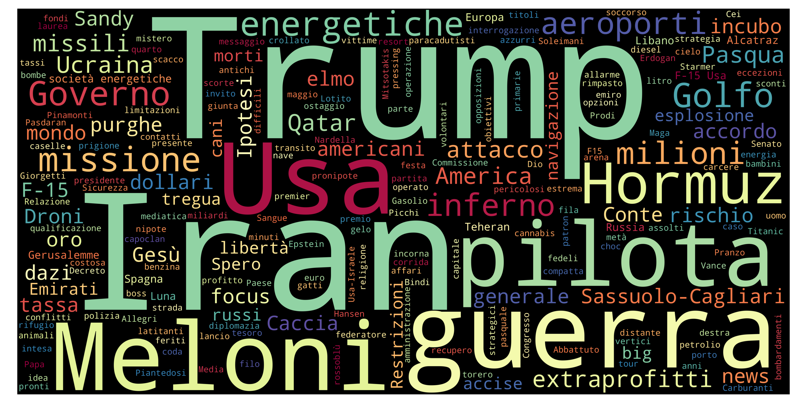
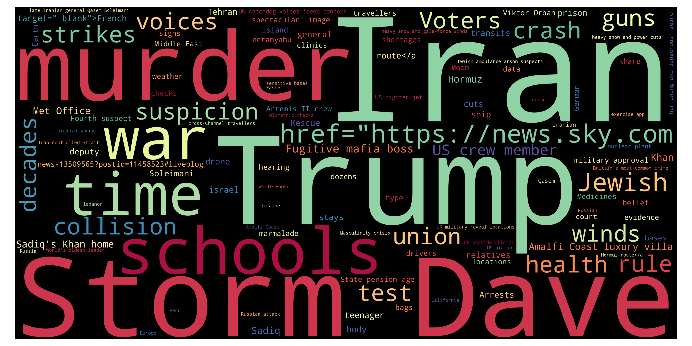
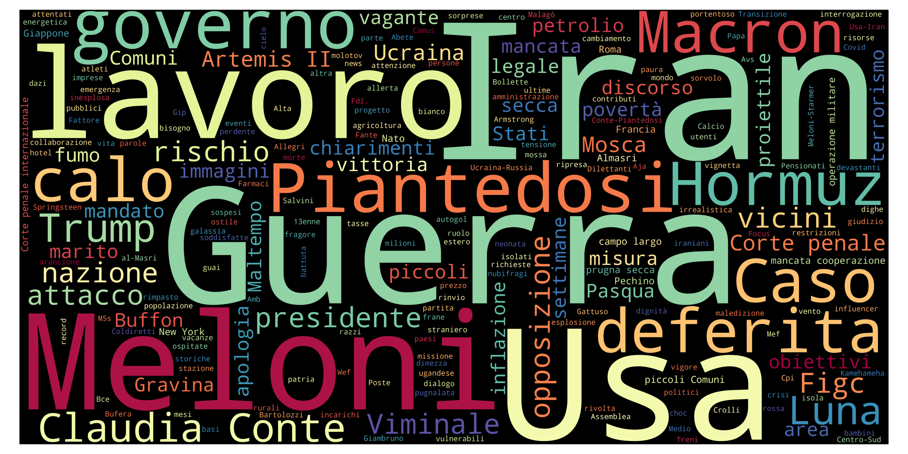
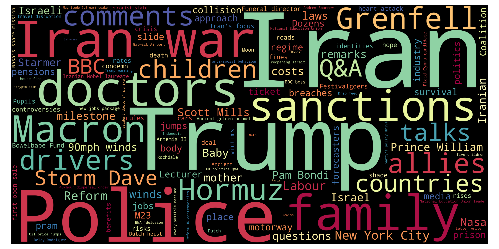

European News Dashboard
Daily view
Last update: 11 Apr 2026, 16:37 CEST
🇮🇹 Italy — 11 Apr 2026
Updated: 11 Apr 2026, 16:37 CESTWordcloud

Top 10 unigrams
| Term | Frequency |
|---|---|
| iran | 9 |
| ungheria | 9 |
| usa | 8 |
| trump | 6 |
| guerra | 5 |
| orban | 5 |
| islamabad | 5 |
| mattarella | 4 |
| voto | 4 |
| primo | 4 |
Top 10 phrases
| Term | Frequency |
|---|---|
| poco tregua | 3 |
| artemis ii | 3 |
| pasqua ortodossa | 2 |
| nicole minetti | 2 |
| gravi condizioni | 2 |
| isole chagos | 2 |
| linea elettrica | 2 |
| attacco russo | 2 |
| iran usa | 2 |
Top 10 new terms (not present on previous day)
| Term | Current day frequency |
|---|---|
| terra | 4 |
| teheran | 4 |
| odessa | 3 |
| astronauta | 3 |
| motivo | 3 |
| artemis ii | 3 |
| umanitare | 3 |
| giovane | 3 |
| poco tregua | 3 |
| araghchi | 2 |
Top 10 increasing terms (vs previous day)
| Term | Difference | Current day frequency | Previous day frequency |
|---|---|---|---|
| ungheria | 4 | 9 | 5 |
| usa | 3 | 8 | 5 |
| primo | 3 | 4 | 1 |
| vance | 2 | 3 | 1 |
| orban | 2 | 5 | 3 |
| hormuz | 2 | 4 | 2 |
| colloquio | 1 | 3 | 2 |
| orbán | 1 | 3 | 2 |
| ucraina | 1 | 4 | 3 |
| voto | 1 | 4 | 3 |
Top 10 decreasing terms (vs previous day)
| Term | Difference | Current day frequency | Previous day frequency |
|---|---|---|---|
| anno | -6 | 1 | 7 |
| berlusconi | -3 | 1 | 4 |
| mattarella | -2 | 4 | 6 |
| giorno | -2 | 1 | 3 |
| zelensky | -2 | 2 | 4 |
| pace | -2 | 1 | 3 |
| pasqua ortodossa | -2 | 2 | 4 |
| negoziato | -2 | 3 | 5 |
| iran | -2 | 9 | 11 |
| aperto | -1 | 1 | 2 |
🇬🇧 UK — 11 Apr 2026
Updated: 11 Apr 2026, 16:37 CESTWordcloud

Top 10 unigrams
| Term | Frequency |
|---|---|
| iran | 13 |
| trump | 9 |
| teenager | 6 |
| channel | 5 |
| death | 5 |
| talk | 4 |
| artemis | 4 |
| vote | 3 |
| bill | 3 |
| bridge | 3 |
Top 10 phrases
| Term | Frequency |
|---|---|
| jd vance | 4 |
| primrose hill | 4 |
| dog attack | 4 |
| iran war | 3 |
| perilous mission | 2 |
| historic mission | 2 |
| artemis ii mission | 2 |
| police families | 2 |
| serial killer | 2 |
| idyllic us town | 2 |
Top 10 new terms (not present on previous day)
| Term | Current day frequency |
|---|---|
| dog attack | 4 |
| artemis | 4 |
| primrose hill | 4 |
| jd vance | 4 |
| minibus | 3 |
| power | 3 |
| hungary | 3 |
| badenoch | 3 |
| essex | 3 |
| sudanese | 3 |
Top 10 increasing terms (vs previous day)
| Term | Difference | Current day frequency | Previous day frequency |
|---|---|---|---|
| death | 3 | 5 | 2 |
| channel | 3 | 5 | 2 |
| teenager | 2 | 6 | 4 |
| orbán | 2 | 3 | 1 |
| arrest | 1 | 2 | 1 |
| bridge | 1 | 3 | 2 |
| forefront | 1 | 2 | 1 |
| crackdown | 1 | 2 | 1 |
| bill | 1 | 3 | 2 |
| force | 1 | 2 | 1 |
Top 10 decreasing terms (vs previous day)
| Term | Difference | Current day frequency | Previous day frequency |
|---|---|---|---|
| iran | -7 | 13 | 20 |
| london | -5 | 2 | 7 |
| medium | -5 | 1 | 6 |
| trump | -3 | 9 | 12 |
| wife | -2 | 1 | 3 |
| murder | -2 | 3 | 5 |
| comment | -2 | 2 | 4 |
| strait | -2 | 1 | 3 |
| ban | -1 | 1 | 2 |
| chagos islands | -1 | 2 | 3 |
🇮🇹 Italy — 10 Apr 2026
Updated: 11 Apr 2026, 16:37 CESTWordcloud

Top 10 unigrams
| Term | Frequency |
|---|---|
| iran | 11 |
| anno | 7 |
| trump | 7 |
| mattarella | 6 |
| negoziato | 5 |
| usa | 5 |
| ungheria | 5 |
| guerra | 4 |
| zelensky | 4 |
| provenzano | 4 |
Top 10 phrases
| Term | Frequency |
|---|---|
| pasqua ortodossa | 4 |
| tel aviv | 3 |
| anti meloni | 2 |
| forza italia | 2 |
| ultimi comizi elettorali | 2 |
| sfida aperta | 2 |
| prossima settimana | 2 |
Top 10 new terms (not present on previous day)
| Term | Current day frequency |
|---|---|
| trump | 7 |
| islamabad | 4 |
| berlusconi | 4 |
| polizia | 4 |
| provenzano | 4 |
| polemica | 3 |
| orban | 3 |
| tel aviv | 3 |
| taiwan | 3 |
| giorno | 3 |
Top 10 increasing terms (vs previous day)
| Term | Difference | Current day frequency | Previous day frequency |
|---|---|---|---|
| anno | 4 | 7 | 3 |
| mattarella | 3 | 6 | 3 |
| negoziato | 3 | 5 | 2 |
| ungheria | 3 | 5 | 2 |
| zelensky | 2 | 4 | 2 |
| salis | 2 | 3 | 1 |
| fiducia | 2 | 3 | 1 |
| figlio | 2 | 3 | 1 |
| voto | 2 | 3 | 1 |
| colloquio | 1 | 2 | 1 |
Top 10 decreasing terms (vs previous day)
| Term | Difference | Current day frequency | Previous day frequency |
|---|---|---|---|
| libano | -10 | 4 | 14 |
| opposizione | -5 | 3 | 8 |
| putin | -4 | 2 | 6 |
| guerra | -4 | 4 | 8 |
| stabilità | -3 | 1 | 4 |
| premier | -3 | 1 | 4 |
| ortodosso | -3 | 3 | 6 |
| punto | -3 | 1 | 4 |
| fuoco | -3 | 3 | 6 |
| attacco | -2 | 2 | 4 |
🇬🇧 UK — 10 Apr 2026
Updated: 11 Apr 2026, 16:37 CESTWordcloud

Top 10 unigrams
| Term | Frequency |
|---|---|
| iran | 20 |
| trump | 12 |
| london | 7 |
| medium | 6 |
| harry | 6 |
| defamation | 5 |
| murder | 5 |
| trial | 5 |
| israel | 5 |
| talk | 4 |
Top 10 phrases
| Term | Frequency |
|---|---|
| prince harry | 6 |
| canary islands | 5 |
| iran war | 3 |
| chagos islands deal | 3 |
| chagos islands | 3 |
| crispin odey | 3 |
| south london | 3 |
| five sticking points | 2 |
| trump starmer bromance | 2 |
| dolce gabbana | 2 |
Top 10 new terms (not present on previous day)
| Term | Current day frequency |
|---|---|
| harry | 6 |
| prince harry | 6 |
| trial | 5 |
| canary islands | 5 |
| murder | 5 |
| defamation | 5 |
| teenager | 4 |
| act | 4 |
| comment | 4 |
| street | 3 |
Top 10 increasing terms (vs previous day)
| Term | Difference | Current day frequency | Previous day frequency |
|---|---|---|---|
| trump | 7 | 12 | 5 |
| london | 4 | 7 | 3 |
| medium | 4 | 6 | 2 |
| iran | 3 | 20 | 17 |
| bus | 3 | 4 | 1 |
| fear | 2 | 4 | 2 |
| message | 2 | 3 | 1 |
| rule | 2 | 3 | 1 |
| victim | 2 | 3 | 1 |
| country | 2 | 3 | 1 |
Top 10 decreasing terms (vs previous day)
| Term | Difference | Current day frequency | Previous day frequency |
|---|---|---|---|
| lebanon | -10 | 3 | 13 |
| price | -5 | 1 | 6 |
| israel | -5 | 5 | 10 |
| child | -4 | 1 | 5 |
| strike | -4 | 2 | 6 |
| time | -4 | 1 | 5 |
| israeli | -3 | 2 | 5 |
| life | -2 | 1 | 3 |
| bill | -2 | 2 | 4 |
| boat | -2 | 1 | 3 |
🇮🇹 Italy — 09 Apr 2026
Updated: 11 Apr 2026, 16:37 CESTWordcloud

Top 10 unigrams
| Term | Frequency |
|---|---|
| meloni | 33 |
| libano | 14 |
| iran | 10 |
| camera | 10 |
| guerra | 8 |
| governo | 8 |
| opposizione | 8 |
| schlein | 7 |
| usa | 7 |
| putin | 6 |
Top 10 phrases
| Term | Frequency |
|---|---|
| nessun rimpasto | 4 |
| pasqua ortodossa | 3 |
| bombardamenti devastanti | 2 |
| melania trump | 2 |
| medio oriente | 2 |
| stretto di hormuz | 2 |
| riunione ministeriale | 2 |
| possibile sospensione | 2 |
Top 10 new terms (not present on previous day)
| Term | Current day frequency |
|---|---|
| schlein | 7 |
| ortodosso | 6 |
| nessun rimpasto | 4 |
| premier | 4 |
| dimissione | 3 |
| pasqua ortodossa | 3 |
| netanyahu | 3 |
| regione | 3 |
| fallimento | 3 |
| maggioranza | 3 |
Top 10 increasing terms (vs previous day)
| Term | Difference | Current day frequency | Previous day frequency |
|---|---|---|---|
| meloni | 24 | 33 | 9 |
| camera | 8 | 10 | 2 |
| governo | 7 | 8 | 1 |
| opposizione | 7 | 8 | 1 |
| putin | 5 | 6 | 1 |
| stabilità | 3 | 4 | 1 |
| patto | 2 | 3 | 1 |
| europa | 2 | 4 | 2 |
| mattarella | 1 | 3 | 2 |
| prezzo | 1 | 3 | 2 |
Top 10 decreasing terms (vs previous day)
| Term | Difference | Current day frequency | Previous day frequency |
|---|---|---|---|
| iran | -8 | 10 | 18 |
| idf | -5 | 1 | 6 |
| regeni | -5 | 1 | 6 |
| film | -4 | 1 | 5 |
| libano | -3 | 14 | 17 |
| israele | -3 | 5 | 8 |
| israeliano | -3 | 1 | 4 |
| negoziato | -2 | 2 | 4 |
| primo | -2 | 1 | 3 |
| legge | -2 | 1 | 3 |
🇬🇧 UK — 09 Apr 2026
Updated: 11 Apr 2026, 16:37 CESTWordcloud

Top 10 unigrams
| Term | Frequency |
|---|---|
| iran | 17 |
| lebanon | 13 |
| israel | 10 |
| strike | 6 |
| price | 6 |
| child | 5 |
| time | 5 |
| israeli | 5 |
| roblox | 5 |
| russian | 5 |
Top 10 phrases
| Term | Frequency |
|---|---|
| primrose hill | 4 |
| middle east | 4 |
| melania trump | 3 |
| diesel prices | 3 |
| fragile ceasefire | 3 |
| iran war | 3 |
| old girl | 3 |
| doug allan | 3 |
| israeli strikes | 2 |
| submarine operation | 2 |
Top 10 new terms (not present on previous day)
| Term | Current day frequency |
|---|---|
| israel | 10 |
| strike | 6 |
| roblox | 5 |
| russian | 5 |
| primrose hill | 4 |
| french | 4 |
| cable | 4 |
| rolex | 4 |
| netanyahu | 4 |
| room | 4 |
Top 10 increasing terms (vs previous day)
| Term | Difference | Current day frequency | Previous day frequency |
|---|---|---|---|
| lebanon | 7 | 13 | 6 |
| child | 3 | 5 | 2 |
| time | 3 | 5 | 2 |
| bill | 3 | 4 | 1 |
| shortage | 2 | 3 | 1 |
| attack | 2 | 3 | 1 |
| concern | 2 | 3 | 1 |
| drink | 2 | 3 | 1 |
| talk | 2 | 4 | 2 |
| israeli | 2 | 5 | 3 |
Top 10 decreasing terms (vs previous day)
| Term | Difference | Current day frequency | Previous day frequency |
|---|---|---|---|
| iran | -15 | 17 | 32 |
| dog | -5 | 2 | 7 |
| us iran ceasefire | -4 | 2 | 6 |
| rspca | -4 | 1 | 5 |
| starmer | -3 | 4 | 7 |
| gulf | -3 | 2 | 5 |
| price | -3 | 6 | 9 |
| doctor | -3 | 1 | 4 |
| bbc | -2 | 2 | 4 |
| victim | -2 | 1 | 3 |
🇮🇹 Italy — 08 Apr 2026
Updated: 11 Apr 2026, 16:37 CESTWordcloud

Top 10 unigrams
| Term | Frequency |
|---|---|
| iran | 18 |
| libano | 17 |
| meloni | 9 |
| guerra | 8 |
| trump | 8 |
| usa | 8 |
| israele | 8 |
| regeni | 6 |
| giuli | 6 |
| idf | 6 |
Top 10 phrases
| Term | Frequency |
|---|---|
| niente fondi | 3 |
| raid israeliani | 2 |
| artemis ii | 2 |
| tregua iran | 2 |
| sovranità energetica | 2 |
Top 10 new terms (not present on previous day)
| Term | Current day frequency |
|---|---|
| libano | 17 |
| guerra | 8 |
| unifil | 4 |
| tajani | 4 |
| punto | 4 |
| negoziato | 4 |
| hormuz | 4 |
| milano | 3 |
| primo | 3 |
| ambasciatore | 3 |
Top 10 increasing terms (vs previous day)
| Term | Difference | Current day frequency | Previous day frequency |
|---|---|---|---|
| israele | 6 | 8 | 2 |
| giuli | 5 | 6 | 1 |
| trump | 5 | 8 | 3 |
| idf | 5 | 6 | 1 |
| fondo | 4 | 5 | 1 |
| fuoco | 4 | 5 | 1 |
| film | 3 | 5 | 2 |
| regeni | 3 | 6 | 3 |
| israeliano | 3 | 4 | 1 |
| meloni | 3 | 9 | 6 |
Top 10 decreasing terms (vs previous day)
| Term | Difference | Current day frequency | Previous day frequency |
|---|---|---|---|
| crosetto | -8 | 1 | 9 |
| energia | -3 | 1 | 4 |
| caso | -3 | 1 | 4 |
| vance | -3 | 2 | 5 |
| iran | -2 | 18 | 20 |
| europa | -2 | 2 | 4 |
| ultimatum | -2 | 1 | 3 |
| messaggio | -1 | 1 | 2 |
| ferito | -1 | 1 | 2 |
| camera | -1 | 2 | 3 |
🇬🇧 UK — 08 Apr 2026
Updated: 11 Apr 2026, 16:37 CESTWordcloud

Top 10 unigrams
| Term | Frequency |
|---|---|
| iran | 32 |
| price | 9 |
| dog | 7 |
| temperature | 7 |
| starmer | 7 |
| trump | 7 |
| lebanon | 6 |
| rspca | 5 |
| gulf | 5 |
| million | 4 |
Top 10 phrases
| Term | Frequency |
|---|---|
| us iran ceasefire | 6 |
| middle east | 5 |
| channel 4 | 4 |
| iran war | 4 |
| israeli strikes | 3 |
| doctors strike | 3 |
| jd vance | 3 |
| oil prices | 3 |
| marjorie taylor greene | 3 |
| large wave | 2 |
Top 10 new terms (not present on previous day)
| Term | Current day frequency |
|---|---|
| dog | 7 |
| us iran ceasefire | 6 |
| middle east | 5 |
| gulf | 5 |
| rspca | 5 |
| channel 4 | 4 |
| vietnam | 4 |
| hormuz | 4 |
| election | 4 |
| doctors strike | 3 |
Top 10 increasing terms (vs previous day)
| Term | Difference | Current day frequency | Previous day frequency |
|---|---|---|---|
| price | 7 | 9 | 2 |
| iran | 7 | 32 | 25 |
| lebanon | 4 | 6 | 2 |
| million | 3 | 4 | 1 |
| starmer | 3 | 7 | 4 |
| teen | 2 | 3 | 1 |
| politic | 2 | 3 | 1 |
| temperature | 2 | 7 | 5 |
| nhs | 1 | 3 | 2 |
| child | 1 | 2 | 1 |
Top 10 decreasing terms (vs previous day)
| Term | Difference | Current day frequency | Previous day frequency |
|---|---|---|---|
| trump | -6 | 7 | 13 |
| basis | -4 | 1 | 5 |
| court | -4 | 1 | 5 |
| way | -3 | 1 | 4 |
| bbc | -3 | 4 | 7 |
| dock | -3 | 1 | 4 |
| israeli | -3 | 3 | 6 |
| kidnap | -2 | 1 | 3 |
| leader | -2 | 1 | 3 |
| war crimes | -2 | 2 | 4 |
🇮🇹 Italy — 07 Apr 2026
Updated: 11 Apr 2026, 16:37 CESTWordcloud

Top 10 unigrams
| Term | Frequency |
|---|---|
| iran | 20 |
| crosetto | 9 |
| usa | 9 |
| meloni | 6 |
| vance | 5 |
| minaccia | 4 |
| energia | 4 |
| caso | 4 |
| trattato | 4 |
| europa | 4 |
Top 10 phrases
| Term | Frequency |
|---|---|
| regno unito | 3 |
| giornalista americana | 2 |
| stretto di hormuz | 2 |
| artemis ii | 2 |
| palazzo chigi | 2 |
| guerra iran | 2 |
| casa bianca | 2 |
| big oil | 2 |
Top 10 new terms (not present on previous day)
| Term | Current day frequency |
|---|---|
| crosetto | 9 |
| vance | 5 |
| energia | 4 |
| caso | 4 |
| trattato | 4 |
| 20enne | 3 |
| nutella | 3 |
| regeni | 3 |
| voto | 3 |
| molise | 3 |
Top 10 increasing terms (vs previous day)
| Term | Difference | Current day frequency | Previous day frequency |
|---|---|---|---|
| usa | 6 | 9 | 3 |
| iran | 5 | 20 | 15 |
| meloni | 4 | 6 | 2 |
| minaccia | 3 | 4 | 1 |
| europa | 2 | 4 | 2 |
| terra | 1 | 2 | 1 |
| attacco | 1 | 2 | 1 |
| orban | 1 | 2 | 1 |
| teheran | 1 | 3 | 2 |
| ultimatum | 1 | 3 | 2 |
Top 10 decreasing terms (vs previous day)
| Term | Difference | Current day frequency | Previous day frequency |
|---|---|---|---|
| tregua | -3 | 2 | 5 |
| energetico | -2 | 2 | 4 |
| vigore | -1 | 1 | 2 |
| petrolio | -1 | 1 | 2 |
| governo | -1 | 1 | 2 |
| drone | -1 | 1 | 2 |
| prezzo | -1 | 1 | 2 |
| notte | -1 | 1 | 2 |
| euro | -1 | 1 | 2 |
| israeliano | -1 | 1 | 2 |
🇬🇧 UK — 07 Apr 2026
Updated: 11 Apr 2026, 16:37 CESTWordcloud

Top 10 unigrams
| Term | Frequency |
|---|---|
| iran | 25 |
| trump | 13 |
| threat | 7 |
| bbc | 7 |
| reparation | 6 |
| israeli | 6 |
| australia | 6 |
| temperature | 5 |
| visa | 5 |
| court | 5 |
Top 10 phrases
| Term | Frequency |
|---|---|
| kanye west | 11 |
| wireless festival | 7 |
| iran war | 6 |
| joey barton | 4 |
| hms dragon docks | 4 |
| war crimes | 4 |
| human chains | 3 |
| power plants | 3 |
| ex footballer joey barton | 3 |
| jd vance | 3 |
Top 10 new terms (not present on previous day)
| Term | Current day frequency |
|---|---|
| bbc | 7 |
| wireless festival | 7 |
| threat | 7 |
| reparation | 6 |
| basis | 5 |
| visa | 5 |
| court | 5 |
| dock | 4 |
| war crimes | 4 |
| orbán | 4 |
Top 10 increasing terms (vs previous day)
| Term | Difference | Current day frequency | Previous day frequency |
|---|---|---|---|
| iran | 10 | 25 | 15 |
| kanye west | 5 | 11 | 6 |
| australia | 4 | 6 | 2 |
| israeli | 4 | 6 | 2 |
| iran war | 3 | 6 | 3 |
| trump | 3 | 13 | 10 |
| temperature | 3 | 5 | 2 |
| starmer | 2 | 4 | 2 |
| way | 2 | 4 | 2 |
| doctor | 2 | 4 | 2 |
Top 10 decreasing terms (vs previous day)
| Term | Difference | Current day frequency | Previous day frequency |
|---|---|---|---|
| tory | -3 | 1 | 4 |
| firm | -2 | 1 | 3 |
| price | -1 | 2 | 3 |
| london | -1 | 3 | 4 |
| nhs | -1 | 2 | 3 |
| pressure | -1 | 1 | 2 |
| school | -1 | 1 | 2 |
| crash | -1 | 1 | 2 |
🇮🇹 Italy — 06 Apr 2026
Updated: 11 Apr 2026, 16:37 CESTWordcloud

Top 10 unigrams
| Term | Frequency |
|---|---|
| iran | 15 |
| guerra | 7 |
| tregua | 5 |
| raid | 4 |
| energetico | 4 |
| primo | 3 |
| trump | 3 |
| usa | 3 |
| news | 2 |
| petrolio | 2 |
Top 10 phrases
| Term | Frequency |
|---|---|
| serie a | 3 |
| artemis ii | 3 |
| quattro ore | 2 |
| crisi energetica | 2 |
| stretto di hormuz | 2 |
| serie turno | 2 |
Top 10 new terms (not present on previous day)
| Term | Current day frequency |
|---|---|
| tregua | 5 |
| artemis ii | 3 |
| stretto di hormuz | 2 |
| pasdaran | 2 |
| grave | 2 |
| vigore | 2 |
| crisi energetica | 2 |
| cost | 2 |
| nodo | 2 |
| europa | 2 |
Top 10 increasing terms (vs previous day)
| Term | Difference | Current day frequency | Previous day frequency |
|---|---|---|---|
| energetico | 3 | 4 | 1 |
| iran | 3 | 15 | 12 |
| primo | 2 | 3 | 1 |
| petrolio | 1 | 2 | 1 |
| meloni | 1 | 2 | 1 |
| miliardo | 1 | 2 | 1 |
| ucraina | 1 | 2 | 1 |
| guerra | 1 | 7 | 6 |
| prezzo | 1 | 2 | 1 |
| vittima | 1 | 2 | 1 |
Top 10 decreasing terms (vs previous day)
| Term | Difference | Current day frequency | Previous day frequency |
|---|---|---|---|
| pasqua | -11 | 1 | 12 |
| usa | -10 | 3 | 13 |
| pace | -5 | 1 | 6 |
| aereo | -2 | 1 | 3 |
| trump | -2 | 3 | 5 |
| lungo | -1 | 1 | 2 |
| intesa | -1 | 1 | 2 |
| giallo | -1 | 1 | 2 |
| estero | -1 | 1 | 2 |
| figlio | -1 | 1 | 2 |
🇬🇧 UK — 06 Apr 2026
Updated: 11 Apr 2026, 16:37 CESTWordcloud

Top 10 unigrams
| Term | Frequency |
|---|---|
| iran | 15 |
| trump | 10 |
| suspicion | 7 |
| police | 5 |
| strike | 5 |
| mother | 4 |
| search | 4 |
| tory | 4 |
| decision | 4 |
| london | 4 |
Top 10 phrases
| Term | Frequency |
|---|---|
| kanye west | 6 |
| murder investigation | 4 |
| wireless festival boss | 3 |
| savannah guthrie | 3 |
| illegal rave | 3 |
| trump deadline | 3 |
| waitrose employee | 3 |
| iran war | 3 |
| steve hilton | 2 |
| ex political aide | 2 |
Top 10 new terms (not present on previous day)
| Term | Current day frequency |
|---|---|
| strike | 5 |
| murder investigation | 4 |
| tory | 4 |
| decision | 4 |
| mother | 4 |
| california | 3 |
| couple | 3 |
| source | 3 |
| rapper | 3 |
| firm | 3 |
Top 10 increasing terms (vs previous day)
| Term | Difference | Current day frequency | Previous day frequency |
|---|---|---|---|
| trump | 7 | 10 | 3 |
| suspicion | 5 | 7 | 2 |
| police | 4 | 5 | 1 |
| search | 3 | 4 | 1 |
| london | 2 | 4 | 2 |
| price | 2 | 3 | 1 |
| love | 1 | 2 | 1 |
| car | 1 | 3 | 2 |
| way | 1 | 2 | 1 |
| time | 1 | 3 | 2 |
Top 10 decreasing terms (vs previous day)
| Term | Difference | Current day frequency | Previous day frequency |
|---|---|---|---|
| family | -3 | 1 | 4 |
| election | -2 | 1 | 3 |
| hormuz | -2 | 2 | 4 |
| thousand | -2 | 1 | 3 |
| attack | -1 | 2 | 3 |
| ban | -1 | 1 | 2 |
| plan | -1 | 1 | 2 |
| rescue | -1 | 3 | 4 |
| right | -1 | 1 | 2 |
| country | -1 | 2 | 3 |
🇮🇹 Italy — 05 Apr 2026
Updated: 11 Apr 2026, 16:37 CESTWordcloud

Top 10 unigrams
| Term | Frequency |
|---|---|
| usa | 13 |
| pasqua | 12 |
| iran | 12 |
| guerra | 6 |
| pace | 6 |
| pilota | 6 |
| inferno | 5 |
| trump | 5 |
| papa | 4 |
| raid | 4 |
Top 10 phrases
| Term | Frequency |
|---|---|
| serie a | 3 |
| sergio mattarella | 2 |
| santo sepolcro | 2 |
| casa bianca | 2 |
| a il | 1 |
Top 10 new terms (not present on previous day)
| Term | Current day frequency |
|---|---|
| pace | 6 |
| raid | 4 |
| germania | 4 |
| serie a | 3 |
| disperso | 3 |
| ultimatum | 3 |
| uovo | 2 |
| centrale | 2 |
| condizione | 2 |
| augurio | 2 |
Top 10 increasing terms (vs previous day)
| Term | Difference | Current day frequency | Previous day frequency |
|---|---|---|---|
| pasqua | 8 | 12 | 4 |
| usa | 6 | 13 | 7 |
| aereo | 2 | 3 | 1 |
| inferno | 2 | 5 | 3 |
| intesa | 1 | 2 | 1 |
| papa | 1 | 4 | 3 |
| gerusalemme | 1 | 3 | 2 |
| figlio | 1 | 2 | 1 |
| luna | 1 | 3 | 2 |
| uomo | 1 | 2 | 1 |
Top 10 decreasing terms (vs previous day)
| Term | Difference | Current day frequency | Previous day frequency |
|---|---|---|---|
| meloni | -9 | 1 | 10 |
| trump | -5 | 5 | 10 |
| guerra | -4 | 6 | 10 |
| energetico | -3 | 1 | 4 |
| hormuz | -3 | 1 | 4 |
| americano | -2 | 1 | 3 |
| missile | -2 | 1 | 3 |
| drone | -2 | 1 | 3 |
| emirato | -2 | 1 | 3 |
| russo | -2 | 1 | 3 |
🇬🇧 UK — 05 Apr 2026
Updated: 11 Apr 2026, 16:37 CESTWordcloud

Top 10 unigrams
| Term | Frequency |
|---|---|
| iran | 16 |
| hungary | 5 |
| rescue | 4 |
| family | 4 |
| child | 4 |
| pepsi | 4 |
| moon | 4 |
| hormuz | 4 |
| election | 3 |
| crash | 3 |
Top 10 phrases
| Term | Frequency |
|---|---|
| storm dave | 7 |
| kanye west | 6 |
| iran war | 4 |
| old boy | 4 |
| palestine action | 3 |
| us airman | 2 |
| kanye west backlash | 2 |
| festival sponsor | 2 |
| artemis stunning moon pictures science | 2 |
| holiday photos | 2 |
Top 10 new terms (not present on previous day)
| Term | Current day frequency |
|---|---|
| kanye west | 6 |
| hungary | 5 |
| pepsi | 4 |
| old boy | 4 |
| iran war | 4 |
| child | 4 |
| family | 4 |
| election | 3 |
| attack | 3 |
| power | 3 |
Top 10 increasing terms (vs previous day)
| Term | Difference | Current day frequency | Previous day frequency |
|---|---|---|---|
| rescue | 2 | 4 | 2 |
| moon | 2 | 4 | 2 |
| road | 1 | 2 | 1 |
| plan | 1 | 2 | 1 |
| victory | 1 | 2 | 1 |
| rival | 1 | 2 | 1 |
| hormuz | 1 | 4 | 3 |
| iran | 1 | 16 | 15 |
Top 10 decreasing terms (vs previous day)
| Term | Difference | Current day frequency | Previous day frequency |
|---|---|---|---|
| trump | -6 | 3 | 9 |
| murder | -4 | 2 | 6 |
| time | -2 | 2 | 4 |
| rule | -2 | 1 | 3 |
| wind | -2 | 1 | 3 |
| weather | -1 | 1 | 2 |
| arrest | -1 | 1 | 2 |
| stay | -1 | 1 | 2 |
| suspicion | -1 | 2 | 3 |
| storm dave | -1 | 7 | 8 |
🇮🇹 Italy — 04 Apr 2026
Updated: 11 Apr 2026, 16:37 CESTWordcloud

Top 10 unigrams
| Term | Frequency |
|---|---|
| iran | 11 |
| trump | 10 |
| guerra | 10 |
| meloni | 10 |
| golfo | 9 |
| usa | 7 |
| pilota | 6 |
| pasqua | 4 |
| rischio | 4 |
| energetico | 4 |
Top 10 phrases
| Term | Frequency |
|---|---|
| società energetiche | 2 |
| f usa | 2 |
| droni russi | 2 |
Top 10 new terms (not present on previous day)
| Term | Current day frequency |
|---|---|
| hormuz | 4 |
| aeroporto | 3 |
| emirato | 3 |
| inferno | 3 |
| extraprofitto | 3 |
| lazio | 2 |
| mondo | 2 |
| libano | 2 |
| visita | 2 |
| gesù | 2 |
Top 10 increasing terms (vs previous day)
| Term | Difference | Current day frequency | Previous day frequency |
|---|---|---|---|
| golfo | 7 | 9 | 2 |
| guerra | 5 | 10 | 5 |
| energetico | 3 | 4 | 1 |
| missione | 2 | 3 | 1 |
| papa | 2 | 3 | 1 |
| pilota | 2 | 6 | 4 |
| missile | 2 | 3 | 1 |
| ucraina | 2 | 3 | 1 |
| pasqua | 2 | 4 | 2 |
| europa | 1 | 2 | 1 |
Top 10 decreasing terms (vs previous day)
| Term | Difference | Current day frequency | Previous day frequency |
|---|---|---|---|
| caso | -5 | 1 | 6 |
| conte | -3 | 2 | 5 |
| anno | -3 | 2 | 5 |
| moglie | -2 | 1 | 3 |
| zelensky | -2 | 1 | 3 |
| figlio | -2 | 1 | 3 |
| usa | -2 | 7 | 9 |
| uomo | -2 | 1 | 3 |
| caccia | -2 | 1 | 3 |
| media | -2 | 1 | 3 |
🇬🇧 UK — 04 Apr 2026
Updated: 11 Apr 2026, 16:37 CESTWordcloud

Top 10 unigrams
| Term | Frequency |
|---|---|
| iran | 15 |
| trump | 9 |
| murder | 6 |
| school | 5 |
| time | 4 |
| war | 4 |
| jewish | 4 |
| test | 3 |
| voice | 3 |
| crash | 3 |
Top 10 phrases
| Term | Frequency |
|---|---|
| storm dave | 8 |
| us crew | 3 |
| fugitive mafia boss | 3 |
| amalfi coast luxury villa | 3 |
| met office | 3 |
| sadiq khan | 3 |
| fourth suspect | 2 |
| spectacular image | 2 |
| artemis ii crew | 2 |
| middle east | 2 |
Top 10 new terms (not present on previous day)
| Term | Current day frequency |
|---|---|
| school | 5 |
| war | 4 |
| jewish | 4 |
| time | 4 |
| sadiq | 3 |
| strike | 3 |
| sadiq khan | 3 |
| health | 3 |
| test | 3 |
| fugitive mafia boss | 3 |
Top 10 increasing terms (vs previous day)
| Term | Difference | Current day frequency | Previous day frequency |
|---|---|---|---|
| storm dave | 6 | 8 | 2 |
| decade | 2 | 3 | 1 |
| trump | 2 | 9 | 7 |
| wind | 2 | 3 | 1 |
| driver | 1 | 2 | 1 |
| suspicion | 1 | 3 | 2 |
| body | 1 | 2 | 1 |
| crash | 1 | 3 | 2 |
| union | 1 | 3 | 2 |
Top 10 decreasing terms (vs previous day)
| Term | Difference | Current day frequency | Previous day frequency |
|---|---|---|---|
| london | -7 | 2 | 9 |
| teenager | -6 | 2 | 8 |
| starmer | -5 | 1 | 6 |
| price | -4 | 1 | 5 |
| death | -4 | 1 | 5 |
| iran | -2 | 15 | 17 |
| earth | -2 | 2 | 4 |
| police | -2 | 1 | 3 |
| teacher | -1 | 1 | 2 |
| middle east | -1 | 2 | 3 |
🇮🇹 Italy — 03 Apr 2026
Updated: 11 Apr 2026, 16:37 CESTWordcloud
Top 10 unigrams
| Term | Frequency |
|---|---|
| trump | 12 |
| iran | 12 |
| meloni | 9 |
| usa | 9 |
| ministro | 8 |
| turismo | 7 |
| caso | 6 |
| guerra | 5 |
| anno | 5 |
| conte | 5 |
Top 10 phrases
| Term | Frequency |
|---|---|
| gianmarco mazzi | 4 |
| stretto di hormuz | 2 |
| f15 usa | 2 |
| f usa | 2 |
| nazionale cantanti | 2 |
| corte penale internazionale | 2 |
| corte penale | 2 |
| new york | 2 |
| parlamento ue | 2 |
| caro carburanti | 2 |
Top 10 new terms (not present on previous day)
| Term | Current day frequency |
|---|---|
| turismo | 7 |
| conte | 5 |
| pilota | 4 |
| gianmarco mazzi | 4 |
| nazionale | 4 |
| tempo | 4 |
| americano | 3 |
| uomo | 3 |
| cdm | 3 |
| media | 3 |
Top 10 increasing terms (vs previous day)
| Term | Difference | Current day frequency | Previous day frequency |
|---|---|---|---|
| trump | 10 | 12 | 2 |
| ministro | 7 | 8 | 1 |
| meloni | 6 | 9 | 3 |
| anno | 4 | 5 | 1 |
| proroga | 2 | 3 | 1 |
| figlio | 2 | 3 | 1 |
| iran | 2 | 12 | 10 |
| russo | 2 | 3 | 1 |
| maltempo | 1 | 3 | 2 |
| paese | 1 | 2 | 1 |
Top 10 decreasing terms (vs previous day)
| Term | Difference | Current day frequency | Previous day frequency |
|---|---|---|---|
| guerra | -4 | 5 | 9 |
| caso | -3 | 6 | 9 |
| luna | -3 | 2 | 5 |
| capo | -2 | 1 | 3 |
| governo | -2 | 5 | 7 |
| piantedosi | -2 | 2 | 4 |
| pasqua | -2 | 2 | 4 |
| ucraina | -2 | 1 | 3 |
| giudizio | -1 | 1 | 2 |
| corte penale | -1 | 2 | 3 |
🇬🇧 UK — 03 Apr 2026
Updated: 11 Apr 2026, 16:37 CESTWordcloud
Top 10 unigrams
| Term | Frequency |
|---|---|
| iran | 17 |
| london | 9 |
| teenager | 8 |
| trump | 7 |
| murder | 6 |
| starmer | 6 |
| death | 5 |
| price | 5 |
| expert | 4 |
| earth | 4 |
Top 10 phrases
| Term | Frequency |
|---|---|
| iran war | 8 |
| post brexit | 3 |
| middle east | 3 |
| us account | 2 |
| deadly iran sports hall strike | 2 |
| spectacular image | 2 |
| artemis ii crew | 2 |
| domestic spending cuts | 2 |
| unanswered questions | 2 |
| security breach | 2 |
Top 10 new terms (not present on previous day)
| Term | Current day frequency |
|---|---|
| teenager | 8 |
| murder | 6 |
| australia | 4 |
| earth | 4 |
| post brexit | 3 |
| strait | 3 |
| french | 3 |
| marmalade | 3 |
| middle east | 3 |
| easter | 3 |
Top 10 increasing terms (vs previous day)
| Term | Difference | Current day frequency | Previous day frequency |
|---|---|---|---|
| london | 7 | 9 | 2 |
| starmer | 4 | 6 | 2 |
| expert | 3 | 4 | 1 |
| death | 3 | 5 | 2 |
| president | 2 | 3 | 1 |
| job | 1 | 2 | 1 |
| crime | 1 | 3 | 2 |
| defence | 1 | 2 | 1 |
| iranians | 1 | 3 | 2 |
Top 10 decreasing terms (vs previous day)
| Term | Difference | Current day frequency | Previous day frequency |
|---|---|---|---|
| trump | -9 | 7 | 16 |
| iran | -8 | 17 | 25 |
| police | -4 | 3 | 7 |
| labour | -3 | 1 | 4 |
| storm dave | -3 | 2 | 5 |
| wind | -3 | 1 | 4 |
| doctor | -3 | 1 | 4 |
| driver | -3 | 1 | 4 |
| ally | -2 | 1 | 3 |
| iran war | -2 | 8 | 10 |
🇮🇹 Italy — 02 Apr 2026
Updated: 11 Apr 2026, 16:37 CESTWordcloud

Top 10 unigrams
| Term | Frequency |
|---|---|
| iran | 10 |
| guerra | 9 |
| caso | 9 |
| usa | 8 |
| governo | 7 |
| lavoro | 5 |
| luna | 5 |
| razzo | 4 |
| pasqua | 4 |
| piantedosi | 4 |
Top 10 phrases
| Term | Frequency |
|---|---|
| pam bondi | 5 |
| campo largo | 4 |
| claudia conte | 3 |
| corte penale | 3 |
| artemis ii | 3 |
| procuratrice generale | 2 |
| roberto arditti | 2 |
| bruce springsteen | 2 |
| new york | 2 |
| corte penale internazionale | 2 |
Top 10 new terms (not present on previous day)
| Term | Current day frequency |
|---|---|
| pam bondi | 5 |
| lavoro | 5 |
| pasqua | 4 |
| campo largo | 4 |
| calo | 4 |
| hormuz | 4 |
| figc | 4 |
| razzo | 4 |
| corte penale | 3 |
| mosca | 3 |
Top 10 increasing terms (vs previous day)
| Term | Difference | Current day frequency | Previous day frequency |
|---|---|---|---|
| caso | 7 | 9 | 2 |
| guerra | 5 | 9 | 4 |
| luna | 3 | 5 | 2 |
| governo | 3 | 7 | 4 |
| opposizione | 3 | 4 | 1 |
| presidente | 2 | 3 | 1 |
| iran | 2 | 10 | 8 |
| attacco | 2 | 3 | 1 |
| piantedosi | 2 | 4 | 2 |
| ucraina | 2 | 3 | 1 |
Top 10 decreasing terms (vs previous day)
| Term | Difference | Current day frequency | Previous day frequency |
|---|---|---|---|
| trump | -11 | 2 | 13 |
| pronto | -2 | 1 | 3 |
| morto | -2 | 1 | 3 |
| anno | -2 | 1 | 3 |
| figlio | -1 | 1 | 2 |
| maltempo | -1 | 2 | 3 |
| transizione | -1 | 1 | 2 |
| mondo | -1 | 1 | 2 |
| news | -1 | 1 | 2 |
| nato | -1 | 4 | 5 |
🇬🇧 UK — 02 Apr 2026
Updated: 11 Apr 2026, 16:37 CESTWordcloud

Top 10 unigrams
| Term | Frequency |
|---|---|
| iran | 25 |
| trump | 16 |
| police | 7 |
| family | 5 |
| sanction | 5 |
| price | 5 |
| tariff | 5 |
| child | 5 |
| grenfell | 5 |
| cost | 4 |
Top 10 phrases
| Term | Frequency |
|---|---|
| iran war | 10 |
| pam bondi | 5 |
| storm dave | 5 |
| mph winds | 4 |
| us attorney general pam bondi | 3 |
| blake lively | 3 |
| prince william | 3 |
| scott mills | 3 |
| young girl | 3 |
| bowelbabe fund | 2 |
Top 10 new terms (not present on previous day)
| Term | Current day frequency |
|---|---|
| sanction | 5 |
| tariff | 5 |
| pam bondi | 5 |
| storm dave | 5 |
| grenfell | 5 |
| labour | 4 |
| country | 4 |
| moon | 4 |
| macron | 4 |
| prince william | 3 |
Top 10 increasing terms (vs previous day)
| Term | Difference | Current day frequency | Previous day frequency |
|---|---|---|---|
| iran | 5 | 25 | 20 |
| police | 3 | 7 | 4 |
| driver | 3 | 4 | 1 |
| strike | 3 | 4 | 1 |
| pupil | 2 | 3 | 1 |
| law | 2 | 3 | 1 |
| comment | 2 | 4 | 2 |
| child | 2 | 5 | 3 |
| mph winds | 2 | 4 | 2 |
| clapham | 1 | 3 | 2 |
Top 10 decreasing terms (vs previous day)
| Term | Difference | Current day frequency | Previous day frequency |
|---|---|---|---|
| job | -4 | 1 | 5 |
| starmer | -4 | 2 | 6 |
| medium | -4 | 2 | 6 |
| investigation | -3 | 1 | 4 |
| cps | -3 | 2 | 5 |
| car | -2 | 2 | 4 |
| talk | -2 | 3 | 5 |
| cut | -2 | 1 | 3 |
| thousand | -2 | 1 | 3 |
| mean | -1 | 1 | 2 |
🇮🇹 Italy — 01 Apr 2026
Updated: 11 Apr 2026, 16:37 CESTWordcloud

Top 10 unigrams
| Term | Frequency |
|---|---|
| trump | 13 |
| iran | 8 |
| usa | 6 |
| nato | 5 |
| guerra | 4 |
| governo | 4 |
| gravina | 4 |
| anno | 3 |
| mondiali | 3 |
| delmastro | 3 |
Top 10 phrases
| Term | Frequency |
|---|---|
| corte suprema | 2 |
| stretto di hormuz | 2 |
Top 10 new terms (not present on previous day)
| Term | Current day frequency |
|---|---|
| gravina | 4 |
| maltempo | 3 |
| luna | 2 |
| milano | 2 |
| zangrillo | 2 |
| social | 2 |
| capo | 2 |
| hezbollah | 2 |
| contratto | 2 |
| carburanti | 2 |
Top 10 increasing terms (vs previous day)
| Term | Difference | Current day frequency | Previous day frequency |
|---|---|---|---|
| trump | 11 | 13 | 2 |
| nato | 4 | 5 | 1 |
| mondiali | 2 | 3 | 1 |
| pronto | 1 | 3 | 2 |
| news | 1 | 2 | 1 |
| nascita | 1 | 2 | 1 |
| morto | 1 | 3 | 2 |
| delmastro | 1 | 3 | 2 |
Top 10 decreasing terms (vs previous day)
| Term | Difference | Current day frequency | Previous day frequency |
|---|---|---|---|
| usa | -7 | 6 | 13 |
| morte | -6 | 1 | 7 |
| governo | -4 | 4 | 8 |
| guerra | -3 | 4 | 7 |
| sigonella | -3 | 1 | 4 |
| israele | -3 | 3 | 6 |
| ministro | -3 | 1 | 4 |
| iran | -3 | 8 | 11 |
| meloni | -2 | 3 | 5 |
| attacco | -2 | 1 | 3 |
🇬🇧 UK — 01 Apr 2026
Updated: 11 Apr 2026, 16:37 CESTWordcloud

Top 10 unigrams
| Term | Frequency |
|---|---|
| iran | 20 |
| trump | 17 |
| family | 6 |
| link | 6 |
| medium | 6 |
| starmer | 6 |
| andrew | 6 |
| mandelson | 6 |
| job | 5 |
| talk | 5 |
Top 10 phrases
| Term | Frequency |
|---|---|
| iran war | 10 |
| system malfunction | 4 |
| scott mills | 3 |
| artemis launch | 3 |
| minimum wage | 3 |
| premier league history | 3 |
| resident doctors | 3 |
| royal navy | 3 |
| king charles | 3 |
| closer ties | 2 |
Top 10 new terms (not present on previous day)
| Term | Current day frequency |
|---|---|
| andrew | 6 |
| mandelson | 6 |
| nato | 5 |
| cps | 5 |
| cost | 5 |
| tie | 4 |
| system malfunction | 4 |
| mid | 3 |
| shortage | 3 |
| deal | 3 |
Top 10 increasing terms (vs previous day)
| Term | Difference | Current day frequency | Previous day frequency |
|---|---|---|---|
| trump | 10 | 17 | 7 |
| family | 5 | 6 | 1 |
| link | 4 | 6 | 2 |
| iran | 3 | 20 | 17 |
| medium | 3 | 6 | 3 |
| job | 3 | 5 | 2 |
| starmer | 3 | 6 | 3 |
| investigation | 3 | 4 | 1 |
| migrant | 3 | 4 | 1 |
| question | 2 | 3 | 1 |
Top 10 decreasing terms (vs previous day)
| Term | Difference | Current day frequency | Previous day frequency |
|---|---|---|---|
| april | -7 | 1 | 8 |
| arrest | -4 | 1 | 5 |
| supply | -2 | 1 | 3 |
| strike | -2 | 1 | 3 |
| iran war | -2 | 10 | 12 |
| pupil | -2 | 1 | 3 |
| minister | -2 | 1 | 3 |
| risk | -2 | 1 | 3 |
| teacher | -2 | 1 | 3 |
| right | -2 | 1 | 3 |
🇮🇹 Italy — 31 Mar 2026
Updated: 11 Apr 2026, 16:37 CESTWordcloud

Top 10 unigrams
| Term | Frequency |
|---|---|
| usa | 13 |
| iran | 11 |
| governo | 8 |
| guerra | 7 |
| morte | 7 |
| base | 6 |
| israele | 6 |
| meloni | 5 |
| pena | 4 |
| ministro | 4 |
Top 10 phrases
| Term | Frequency |
|---|---|
| italia usa | 3 |
| palazzo chigi | 3 |
| giornalista americana | 2 |
| decreto bollette | 2 |
| craxi reagan | 2 |
| pace duratura | 2 |
| dl bollette | 2 |
Top 10 new terms (not present on previous day)
| Term | Current day frequency |
|---|---|
| base | 6 |
| lavoro | 4 |
| iraq | 4 |
| sigonella | 4 |
| crisi | 4 |
| cina | 3 |
| internazionale | 3 |
| prezzo | 3 |
| simbolo | 3 |
| italia usa | 3 |
Top 10 increasing terms (vs previous day)
| Term | Difference | Current day frequency | Previous day frequency |
|---|---|---|---|
| usa | 7 | 13 | 6 |
| guerra | 5 | 7 | 2 |
| governo | 4 | 8 | 4 |
| figlio | 3 | 4 | 1 |
| ministro | 3 | 4 | 1 |
| meloni | 3 | 5 | 2 |
| morte | 3 | 7 | 4 |
| ucraina | 2 | 3 | 1 |
| americano | 2 | 3 | 1 |
| accordo | 2 | 3 | 1 |
Top 10 decreasing terms (vs previous day)
| Term | Difference | Current day frequency | Previous day frequency |
|---|---|---|---|
| cuba | -4 | 2 | 6 |
| russo | -3 | 1 | 4 |
| scuola | -3 | 1 | 4 |
| kharg | -2 | 1 | 3 |
| piano | -2 | 1 | 3 |
| aiuto | -2 | 2 | 4 |
| misura | -1 | 1 | 2 |
| intesa | -1 | 1 | 2 |
| news | -1 | 1 | 2 |
| pasqua | -1 | 3 | 4 |
🇬🇧 UK — 31 Mar 2026
Updated: 11 Apr 2026, 16:37 CESTWordcloud

Top 10 unigrams
| Term | Frequency |
|---|---|
| iran | 17 |
| april | 8 |
| trump | 7 |
| troop | 5 |
| police | 5 |
| rule | 5 |
| arrest | 5 |
| france | 5 |
| china | 5 |
| price | 4 |
Top 10 phrases
| Term | Frequency |
|---|---|
| iran war | 12 |
| middle east | 7 |
| scott mills | 4 |
| white house | 4 |
| king charles | 4 |
| southern lebanon | 3 |
| tiger woods | 3 |
| king state visit | 3 |
| scottish crime boss | 3 |
| middle east crisis | 3 |
Top 10 new terms (not present on previous day)
| Term | Current day frequency |
|---|---|
| april | 8 |
| arrest | 5 |
| police | 5 |
| rule | 5 |
| china | 5 |
| oil | 4 |
| white house | 4 |
| europe | 4 |
| gulf | 4 |
| doctor | 4 |
Top 10 increasing terms (vs previous day)
| Term | Difference | Current day frequency | Previous day frequency |
|---|---|---|---|
| iran war | 7 | 12 | 5 |
| troop | 4 | 5 | 1 |
| increase | 3 | 4 | 1 |
| middle east | 3 | 7 | 4 |
| time | 3 | 4 | 1 |
| france | 3 | 5 | 2 |
| life | 2 | 3 | 1 |
| pupil | 2 | 3 | 1 |
| victim | 2 | 4 | 2 |
| medium | 2 | 3 | 1 |
Top 10 decreasing terms (vs previous day)
| Term | Difference | Current day frequency | Previous day frequency |
|---|---|---|---|
| bbc | -6 | 3 | 9 |
| attack | -6 | 2 | 8 |
| russian | -3 | 2 | 5 |
| australia | -3 | 2 | 5 |
| government | -3 | 1 | 4 |
| survivor | -3 | 1 | 4 |
| iran | -3 | 17 | 20 |
| family | -3 | 1 | 4 |
| cut | -2 | 1 | 3 |
| driver | -2 | 1 | 3 |
🇮🇹 Italy — 30 Mar 2026
Updated: 11 Apr 2026, 16:37 CESTWordcloud

Top 10 unigrams
| Term | Frequency |
|---|---|
| iran | 9 |
| israele | 6 |
| cuba | 6 |
| usa | 6 |
| unifil | 4 |
| morte | 4 |
| pena | 4 |
| pasqua | 4 |
| sala | 4 |
| ballo | 4 |
Top 10 phrases
| Term | Frequency |
|---|---|
| casa bianca | 4 |
| legge elettorale | 3 |
| santo sepolcro | 3 |
| caschi blu | 2 |
| caso delmastro | 2 |
| regione piemonte | 2 |
| elena chiorino | 2 |
| voto anticipato | 2 |
Top 10 new terms (not present on previous day)
| Term | Current day frequency |
|---|---|
| cuba | 6 |
| aiuto | 4 |
| strage | 4 |
| sala | 4 |
| scuola | 4 |
| unifil | 4 |
| russo | 4 |
| ballo | 4 |
| casa bianca | 4 |
| presidente | 3 |
Top 10 increasing terms (vs previous day)
| Term | Difference | Current day frequency | Previous day frequency |
|---|---|---|---|
| governo | 3 | 4 | 1 |
| iran | 3 | 9 | 6 |
| piano | 2 | 3 | 1 |
| pasqua | 2 | 4 | 2 |
| pace | 1 | 3 | 2 |
| pena | 1 | 4 | 3 |
| terrorista | 1 | 2 | 1 |
| arresto | 1 | 2 | 1 |
| sfida | 1 | 2 | 1 |
| drone | 1 | 2 | 1 |
Top 10 decreasing terms (vs previous day)
| Term | Difference | Current day frequency | Previous day frequency |
|---|---|---|---|
| meloni | -7 | 2 | 9 |
| israele | -7 | 6 | 13 |
| guerra | -5 | 2 | 7 |
| santo sepolcro | -5 | 3 | 8 |
| cardinale | -5 | 1 | 6 |
| anno | -3 | 3 | 6 |
| fermo | -2 | 1 | 3 |
| netanyahu | -2 | 2 | 4 |
| pizzaballa | -2 | 2 | 4 |
| protesta | -2 | 1 | 3 |
🇬🇧 UK — 30 Mar 2026
Updated: 11 Apr 2026, 16:37 CESTWordcloud

Top 10 unigrams
| Term | Frequency |
|---|---|
| iran | 20 |
| bbc | 9 |
| attack | 8 |
| price | 6 |
| trump | 6 |
| million | 5 |
| allegation | 5 |
| cost | 5 |
| australia | 5 |
| russian | 5 |
Top 10 phrases
| Term | Frequency |
|---|---|
| scott mills | 5 |
| iran war | 5 |
| zack polanski | 4 |
| middle east | 4 |
| death penalty | 3 |
| identical twins | 3 |
| céline dion | 2 |
| deadly attacks | 2 |
| israeli law | 2 |
| barbie dream fest | 2 |
Top 10 new terms (not present on previous day)
| Term | Current day frequency |
|---|---|
| bbc | 9 |
| scott mills | 5 |
| million | 5 |
| russian | 5 |
| allegation | 5 |
| iran war | 5 |
| greens | 4 |
| russia | 4 |
| middle east | 4 |
| diplomat | 4 |
Top 10 increasing terms (vs previous day)
| Term | Difference | Current day frequency | Previous day frequency |
|---|---|---|---|
| iran | 8 | 20 | 12 |
| attack | 6 | 8 | 2 |
| family | 3 | 4 | 1 |
| trump | 3 | 6 | 3 |
| australia | 3 | 5 | 2 |
| expert | 2 | 3 | 1 |
| fund | 2 | 3 | 1 |
| price | 2 | 6 | 4 |
| election | 2 | 3 | 1 |
| collapse | 2 | 3 | 1 |
Top 10 decreasing terms (vs previous day)
| Term | Difference | Current day frequency | Previous day frequency |
|---|---|---|---|
| israeli | -5 | 2 | 7 |
| lebanon | -4 | 2 | 6 |
| pedestrian | -3 | 1 | 4 |
| image | -2 | 1 | 3 |
| uae | -2 | 1 | 3 |
| medium | -2 | 1 | 3 |
| nhs | -2 | 2 | 4 |
| time | -2 | 1 | 3 |
| motorist | -1 | 1 | 2 |
| child | -1 | 2 | 3 |
🇮🇹 Italy — 29 Mar 2026
Updated: 11 Apr 2026, 16:37 CESTWordcloud

Top 10 unigrams
| Term | Frequency |
|---|---|
| israele | 13 |
| meloni | 9 |
| guerra | 7 |
| usa | 7 |
| cardinale | 6 |
| anno | 6 |
| iran | 6 |
| legge | 4 |
| anarchico | 4 |
| kings | 4 |
Top 10 phrases
| Term | Frequency |
|---|---|
| santo sepolcro | 8 |
| david riondino | 4 |
| decreto sicurezza | 3 |
| elezioni anticipate | 2 |
| profondo dolore | 2 |
| spiacevole incidente | 2 |
| mar rosso | 2 |
| otto milioni | 2 |
Top 10 new terms (not present on previous day)
| Term | Current day frequency |
|---|---|
| santo sepolcro | 8 |
| cardinale | 6 |
| legge | 4 |
| netanyahu | 4 |
| kings | 4 |
| pizzaballa | 4 |
| anarchico | 4 |
| david riondino | 4 |
| addio | 3 |
| decreto sicurezza | 3 |
Top 10 increasing terms (vs previous day)
| Term | Difference | Current day frequency | Previous day frequency |
|---|---|---|---|
| israele | 11 | 13 | 2 |
| anno | 5 | 6 | 1 |
| meloni | 4 | 9 | 5 |
| ambasciatore | 2 | 3 | 1 |
| teheran | 2 | 4 | 2 |
| usa | 2 | 7 | 5 |
| terra | 1 | 2 | 1 |
| papa | 1 | 3 | 2 |
| preventivo | 1 | 2 | 1 |
| stop | 1 | 3 | 2 |
Top 10 decreasing terms (vs previous day)
| Term | Difference | Current day frequency | Previous day frequency |
|---|---|---|---|
| guerra | -6 | 7 | 13 |
| corteo | -5 | 1 | 6 |
| roma | -5 | 2 | 7 |
| governo | -4 | 1 | 5 |
| dialogo | -2 | 1 | 3 |
| politica | -2 | 1 | 3 |
| ucraina | -2 | 1 | 3 |
| polizia | -1 | 1 | 2 |
| transizione | -1 | 1 | 2 |
| arresto | -1 | 1 | 2 |
🇬🇧 UK — 29 Mar 2026
Updated: 11 Apr 2026, 16:37 CESTWordcloud

Top 10 unigrams
| Term | Frequency |
|---|---|
| iran | 12 |
| israeli | 7 |
| journalist | 6 |
| lebanon | 6 |
| derby | 5 |
| spur | 4 |
| funeral | 4 |
| price | 4 |
| pedestrian | 4 |
| cost | 4 |
Top 10 phrases
| Term | Frequency |
|---|---|
| israeli strike | 4 |
| free transport | 4 |
| fuel prices | 4 |
| counter terror police | 3 |
| palm sunday | 3 |
| war images | 3 |
| keir starmer | 3 |
| jeremy bowen | 2 |
| de zerbi | 2 |
| permanent boss | 2 |
Top 10 new terms (not present on previous day)
| Term | Current day frequency |
|---|---|
| derby | 5 |
| nhs | 4 |
| badenoch | 4 |
| cost | 4 |
| free transport | 4 |
| spur | 4 |
| pedestrian | 4 |
| funeral | 4 |
| fuel prices | 4 |
| campaign | 3 |
Top 10 increasing terms (vs previous day)
| Term | Difference | Current day frequency | Previous day frequency |
|---|---|---|---|
| lebanon | 4 | 6 | 2 |
| iran | 3 | 12 | 9 |
| price | 3 | 4 | 1 |
| feature | 1 | 2 | 1 |
| senegal | 1 | 2 | 1 |
| force | 1 | 2 | 1 |
| suspicion | 1 | 2 | 1 |
| photo | 1 | 2 | 1 |
| school | 1 | 2 | 1 |
| journalist | 1 | 6 | 5 |
Top 10 decreasing terms (vs previous day)
| Term | Difference | Current day frequency | Previous day frequency |
|---|---|---|---|
| london | -8 | 3 | 11 |
| thousand | -5 | 1 | 6 |
| trump | -5 | 3 | 8 |
| king | -4 | 2 | 6 |
| defiance | -2 | 1 | 3 |
| israeli | -2 | 7 | 9 |
| deepen | -1 | 1 | 2 |
| expert | -1 | 1 | 2 |
| medium | -1 | 3 | 4 |
| restaurant | -1 | 1 | 2 |